Stability-based parameter assessment
Source:vignettes/stability-pipeline-description.Rmd
stability-pipeline-description.RmdMake sure you have Rtools installed: https://cran.r-project.org/bin/windows/Rtools/rtools42/rtools.html In case some packages cannot be installed because of the locks, remove and reinstall them.
Load the libraries.
library(RhpcBLASctl)
library(SeuratData)
library(patchwork)
library(Matrix)
library(Seurat)
#> Loading required package: SeuratObject
#> Loading required package: sp
#>
#> Attaching package: 'SeuratObject'
#> The following objects are masked from 'package:base':
#>
#> intersect, t
library(ggplot2)
library(ClustAssess)
reticulate::py_install("leidenalg")
#> Using virtual environment '/home/andi/.virtualenvs/r-reticulate' ...
#> + /home/andi/.virtualenvs/r-reticulate/bin/python -m pip install --upgrade --no-user leidenalg
reticulate::py_install("six")
#> Using virtual environment '/home/andi/.virtualenvs/r-reticulate' ...
#> + /home/andi/.virtualenvs/r-reticulate/bin/python -m pip install --upgrade --no-user six
packageVersion("ClustAssess") # should be 1.0.0
#> [1] '1.1.0'Calculating ECS, ECC
In the following we will test the functionality of the ClustAssess package in terms of calculating the ECS and ECC.
mb1 <- c(1, 1, 1, 2, 2, 2, 3, 3)
mb2 <- c(1, 2, 1, 2, 2, 2, 3, 3)
# calculate the ECS score for each observation
print(element_sim_elscore(mb1, mb2))
#> [1] 0.6666667 0.2500000 0.6666667 0.7500000 0.7500000 0.7500000 1.0000000
#> [8] 1.0000000
# calculate the average ECS
print(mean(element_sim_elscore(mb1, mb2)))
#> [1] 0.7291667
print(element_sim(mb1, mb2))
#> [1] 0.7291667
# create a list of 10 random partitions
list_mbs <- lapply(1:10, function(i) {
sample.int(4, 5, replace = TRUE)
})
print(list_mbs)
#> [[1]]
#> [1] 3 3 3 3 4
#>
#> [[2]]
#> [1] 3 4 3 2 2
#>
#> [[3]]
#> [1] 4 4 4 4 4
#>
#> [[4]]
#> [1] 1 1 3 2 3
#>
#> [[5]]
#> [1] 2 2 4 3 4
#>
#> [[6]]
#> [1] 1 4 2 3 2
#>
#> [[7]]
#> [1] 2 3 4 1 2
#>
#> [[8]]
#> [1] 4 1 4 2 4
#>
#> [[9]]
#> [1] 3 2 2 2 4
#>
#> [[10]]
#> [1] 1 2 4 3 1
element_consistency(list_mbs)
#> [1] 0.4918519 0.5451852 0.4925926 0.5740741 0.5385185Stability pipeline
Reading the data
In this vignette we illustrate a data-driven pipeline for the assessment of optimal clustering parameters for a single-cell RNA-seq dataset. Popular pipelines for single-cell clustering (including Seurat, SCANPY, and Monocle v3) consist of a sequence of steps, including normalization, dimensionality reduction, nearest-neighbor graph construction, and community detection on that graph. The obtained communities are then the clusters, which can be used for downstream analysis by looking at marker genes, trajectories, and more. ClustAssess offers a set of tools to assess the stability of parameters in the clustering pipeline, for the steps of dimensionality reduction, nearest-neighbor graph construction, and community detection.
To illustrate these tools, we will use the PBMC 3k dataset as it is provided in the SeuratData package. The input is provided as a 13714x 2700 expression level matrix containing the raw quantification (in csv format).
InstallData("pbmc3k")
#> Warning: The following packages are already installed and will not be
#> reinstalled: pbmc3k
data("pbmc3k")
pbmc3k <- UpdateSeuratObject(pbmc3k)
#> Validating object structure
#> Updating object slots
#> Ensuring keys are in the proper structure
#> Warning: Assay RNA changing from Assay to Assay
#> Ensuring keys are in the proper structure
#> Ensuring feature names don't have underscores or pipes
#> Updating slots in RNA
#> Validating object structure for Assay 'RNA'
#> Object representation is consistent with the most current Seurat version
pbmc3k
#> An object of class Seurat
#> 13714 features across 2700 samples within 1 assay
#> Active assay: RNA (13714 features, 0 variable features)
#> 2 layers present: counts, data
pbmc3k <- PercentageFeatureSet(pbmc3k, pattern = "^MT-", col.name = "percent.mito")
pbmc3k <- PercentageFeatureSet(pbmc3k, pattern = "^RP[SL][[:digit:]]", col.name = "percent.rp")The analysis is based on the Seurat pipeline (Hao et al 2021, Integrated analysis of multimodal single-cell data); after creating the object and recording the mitochondrial and ribosomal gene percentages, those genes are excluded from the downstream analysis.
Quality checks
We remove the mithocondrial and ribosomal genes.
# remove MT and RP genes
all.index <- seq_len(nrow(pbmc3k))
MT.index <- grep(pattern = "^MT-", x = rownames(pbmc3k), value = FALSE)
RP.index <- grep(pattern = "^RP[SL][[:digit:]]", x = rownames(pbmc3k), value = FALSE)
pbmc3k <- pbmc3k[!((all.index %in% MT.index) | (all.index %in% RP.index)), ]We plot the violin plots to visualise the distribution of the number of features, number of counts, percentage of mitochondrial genes, and percentage of ribosomal genes.
After the quality control step, we filter the dataset using the following criteria: - the number of features is less than 2000 - the number of counts is less than 2500 - the percentage of mitochondrial genes is less than 7% - the percentage of ribosomal genes is greater than 7%
pbmc3k <- subset(pbmc3k, nFeature_RNA < 2000 & nCount_RNA < 2500 & percent.mito < 7 & percent.rp > 7)We plot again the violin plots to see the distribution of the features after the filtering step.
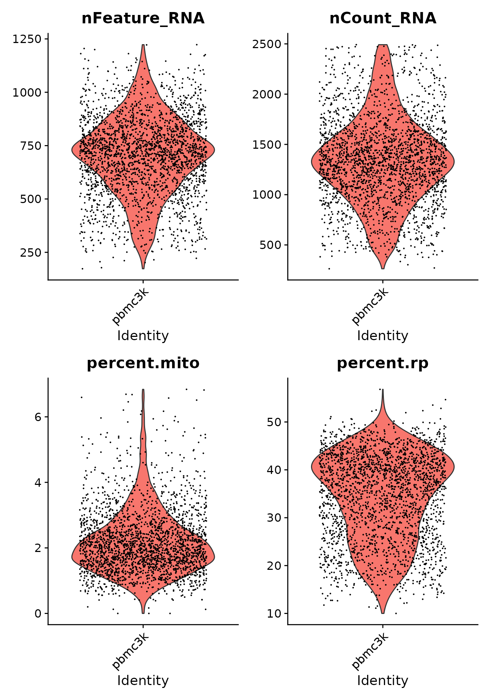
Normalization and scaling
The data is normalized and scaled using the Seurat’s NormalizeData and ScaleData methods. The variable feature set is obtained by running the FindVariableFeatures function from the same package.
pbmc3k <- NormalizeData(pbmc3k, verbose = FALSE)
pbmc3k <- FindVariableFeatures(pbmc3k, selection.method = "vst", nfeatures = 3000, verbose = FALSE)
features <- dimnames(pbmc3k@assays$RNA)[[1]]
var_features <- pbmc3k@assays[["RNA"]]@var.features
n_abundant <- 3000
most_abundant_genes <- rownames(pbmc3k@assays$RNA)[order(Matrix::rowSums(pbmc3k@assays$RNA),
decreasing = TRUE
)]
pbmc3k <- ScaleData(pbmc3k, features = features, verbose = FALSE)
pbmc3k <- RunPCA(pbmc3k,
npcs = 30,
approx = FALSE,
verbose = FALSE,
features = intersect(most_abundant_genes, pbmc3k@assays$RNA@var.features)
)
pbmc3k <- RunUMAP(pbmc3k,
reduction = "pca",
dims = 1:30,
n.neighbors = 30,
min.dist = 0.3,
metric = "cosine",
verbose = FALSE
)
raw_umap <- data.frame(pbmc3k@reductions$umap@cell.embeddings)We generate the following plots: A - the distribution of the predefined Seurat celltype annotations; B – E distributions of sequencing depths (B), number of features (C), and percentages of reads incident to mitochondrial genes (D) and ribosomal genes (E) illustrated using the colour gradient.
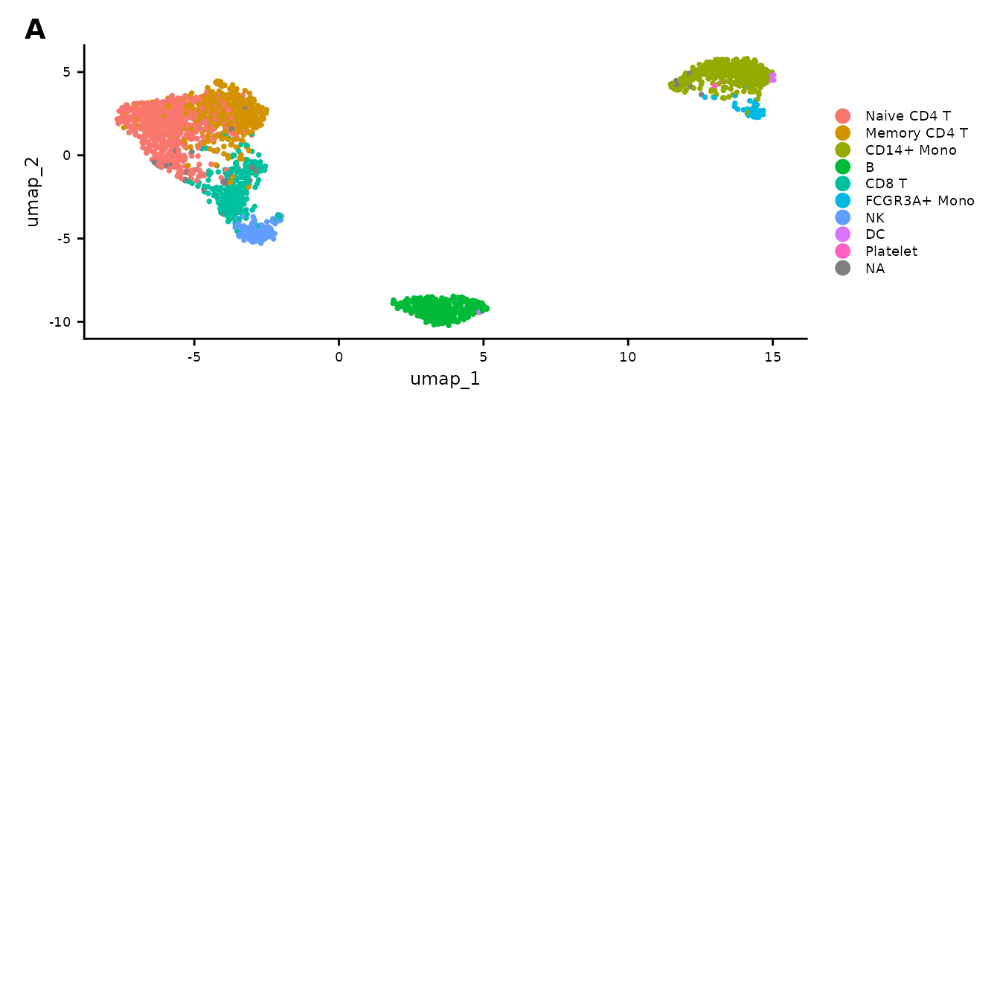
Effect of the random seed
To illustrate the necessity of obtaining reproducible and robust clustering outputs, we will perform only the clustering step several times by only changing the random seed.
pbmc3k <- FindNeighbors(pbmc3k)
#> Computing nearest neighbor graph
#> Computing SNN
clustering_list <- lapply(seq(from = 1, by = 100, length.out = 10), function(i) {
pbmc3k <- FindClusters(pbmc3k, algorithm = 3, random.seed = i, verbose = FALSE)
as.integer(pbmc3k$seurat_clusters)
})We assess the stability of the clustering by calculating the consistency of the 10 clustering outputs.
ecc_value <- merge_partitions(clustering_list, return_ecs_matrix = TRUE)
print(fivenum(ecc_value$ecc))
#> [1] 0.5437092 0.9953488 1.0000000 1.0000000 1.0000000The similarity between the distinct partitions can be assessed by accessing the ecs_matrix field.
print(ecc_value$ecs_matrix)
#> [,1] [,2] [,3]
#> [1,] 1.0000000 0.9915337 0.9950592
#> [2,] 0.9915337 1.0000000 0.9866320
#> [3,] 0.9950592 0.9866320 1.0000000The difference between clusters can be visualised using the ECC distribution. Also, comparing the output of the clustering using the second and the fourth seed, we notice that some cells from the top-left island change their identity between the fifth and seventh cluster.
gplots <- list()
gplots[[1]] <- ggplot(raw_umap, aes(x = umap_1, y = umap_2, colour = ecc_value$ecc)) +
geom_point() +
theme_classic() +
scale_colour_viridis_c()
raw_umap$clustering <- factor(clustering_list[[2]])
gplots[[2]] <- ggplot(raw_umap, aes(x = umap_1, y = umap_2, colour = clustering)) +
geom_point() + theme_classic()
raw_umap$clustering <- factor(clustering_list[[4]])
gplots[[3]] <- ggplot(raw_umap, aes(x = umap_1, y = umap_2, colour = clustering)) +
geom_point() + theme_classic()
wrap_plots(gplots)Applying ClustAssess
Note: The following sections provide an example of applying the ClustAssess summary assessment methods. The values of the parameters should be varied and critically assessed for each individual dataset. Also, we recommend increasing the number of repetitions used for stability inference, to ensure reliable and robust conclusions.
n_repetitions <- 10The following analysis is performed by varying the seed multiple times. The pipeline can be run in parallel, so by initialising a backend with multiple number of cores, the task will be split into the processess. Setting the value of 1 will result in a sequential run of all iterations. We encourage the usage of a higher number of cores when possible, as it will decrease the runtime of the assessment pipeline. Please note that the number of cores should be chosen carefully, as each newly created process will add to the memory usage.
RhpcBLASctl::blas_set_num_threads(1)
ncores <- 1
if (ncores > 1) {
my_cluster <- parallel::makeCluster(
ncores,
type = "PSOCK"
)
doParallel::registerDoParallel(cl = my_cluster)
}Dimensionality reduction
The first parameter that we will evaluate and note to substantially influence the dimensionality reduction (linear or non-linear) is the feature set. The Seurat pipeline relies on the highly variable genes (default) for the computation of the Principal Components. The top x most variable genes or most abundant genes can be selected, where x varies according to the characteristics of the dataset; frequently used values are 500, 1000, 2000, 3000 etc.
To showcase the importance of this parameter, we assess three different sets of features:
-
highly variable genes: this set can be obtained in the Seurat pipeline by using either the
SCTransformorFindVariableFeaturesmethod. Depending on the method, using the default parameters will get a number of 2000 or 3000 genes. - most abundant genes: this set can be obtained by sorting the genes based on their expression level.
- intersection between highly variable and most abundant genes: this set is obtained by intersecting a subset of the most abundant genes and the highly variable feature set. Taking the intersection will lead to a smaller number of genes compared to the initial sets.
steps <- seq(from = 500, to = 3000, by = 500)
ma_hv_genes_intersection_sets <- sapply(steps, function(x) intersect(most_abundant_genes[seq_len(x)], var_features[seq_len(x)]))
ma_hv_genes_intersection <- Reduce(union, ma_hv_genes_intersection_sets)
ma_hv_steps <- sapply(ma_hv_genes_intersection_sets, length)assess_feature_stability is a function that explores the stability of a feature set. The input consists of a normalized expression matrix, that is summarized using either PCA or UMAP. The obtained embedding is then processed using one of the community detection methods that are used in the Seurat package. This process is iterated across random seeds. The method outputs a list containing an UMAP embedding, the cell assignment corresponding to the most frequent partition and the Element-Centric Consistency (ECC) across all communities obtained throughout the iterations. The higher the Element-Centric Consistency, the more stable the clustering. To increase the robustness of the stability assessment, we also vary the resolution parameter that directly impacts the number of clusters.
pca_feature_stability_object <- mapply(c,
assess_feature_stability(
data_matrix = pbmc3k@assays[["RNA"]]@scale.data,
feature_set = most_abundant_genes,
resolution = seq(from = 0.1, to = 1, by = 0.1),
steps = steps,
n_repetitions = n_repetitions,
feature_type = "MA",
graph_reduction_type = "PCA",
umap_arguments = list(
min_dist = 0.3,
n_neighbors = 30,
metric = "cosine"
),
ecs_thresh = 1,
clustering_algorithm = 1
),
assess_feature_stability(
data_matrix = pbmc3k@assays[["RNA"]]@scale.data,
feature_set = var_features,
resolution = seq(from = 0.1, to = 1, by = 0.1),
steps = steps,
n_repetitions = n_repetitions,
feature_type = "HV",
graph_reduction_type = "PCA",
umap_arguments = list(
min_dist = 0.3,
n_neighbors = 30,
metric = "cosine"
),
ecs_thresh = 1,
clustering_algorithm = 1
),
assess_feature_stability(
data_matrix = pbmc3k@assays[["RNA"]]@scale.data,
feature_set = ma_hv_genes_intersection,
steps = ma_hv_steps,
resolution = seq(from = 0.1, to = 1, by = 0.1),
n_repetitions = n_repetitions,
feature_type = "MA_HV",
graph_reduction_type = "PCA",
umap_arguments = list(
min_dist = 0.3,
n_neighbors = 30,
metric = "cosine"
),
ecs_thresh = 1,
clustering_algorithm = 1
),
SIMPLIFY = FALSE
)The function assess_feature_stability outputs the stability of different feature sets and concatenates the results to ease cross-comparisons. The plot illustrates the stability assessment, across 30 runs, each with different random seeds, on the three gene sets described above. We assessed the stability of each set on incremental number of selected genes. Thus, the boxplots are arranged in groups of three (the number of evaluated feature sets); above each boxplot we specify the number of elements per subset. The user can interogate the stability values that are obtained for each resolution value, as indicated in the left-side panel, or the overall stability assessment (which is determined by collecting the median of the ECC-distribution of each resolution value), as it can be seen in the right-side panel.
For the PBMC case study, a conclusion that is supported based on this plot is that configurations such as MA 500, 2000, 2500, 3000, HV 500, 1000, 1500, 2500 or MA_HV 65, 175, 425 are suitable choices for the Principal Components Analysis, as the ECC score is high with a low-variance distribution.
wrap_plots(
plot_feature_per_resolution_stability_boxplot(pca_feature_stability_object, resolution = 0.8, text_size = 2.5, boxplot_width = 0.4, dodge_width = 0.7) +
theme(
legend.position = c(1, 0),
legend.justification = c(1, 0)
),
plot_feature_overall_stability_boxplot(pca_feature_stability_object, text_size = 2.5, boxplot_width = 0.4, dodge_width = 0.7) +
theme(
legend.position = c(1, 0),
legend.justification = c(1, 0)
)
)
#> Warning: A numeric `legend.position` argument in `theme()` was deprecated in ggplot2
#> 3.5.0.
#> ℹ Please use the `legend.position.inside` argument of `theme()` instead.
#> This warning is displayed once every 8 hours.
#> Call `lifecycle::last_lifecycle_warnings()` to see where this warning was
#> generated.Another angle for assessing the stability is centered on the comparison between consecutive steps, for each feature set, performed using the Element-Centric Similarity on the most frequent partitions from each step. The aim is evaluating the effect of increasing the number of genes on the final partitions, and, indirectly, determining the transition from the signal to the noise zone. For the PBMC case study, we observe an increase in similarity between consecutive steps for the MA and MA_HV genes, suggesting that selecting more genes would lead to a more robust partitioning.
wrap_plots(
plot_feature_per_resolution_stability_incremental(pca_feature_stability_object, dodge_width = 0.6, resolution = 0.8, text_size = 2) +
theme(
legend.position = c(1, 0),
legend.justification = c(1, 0)
),
plot_feature_overall_stability_incremental(pca_feature_stability_object, dodge_width = 0.6, text_size = 2) +
theme(
legend.position = c(1, 0),
legend.justification = c(1, 0)
)
)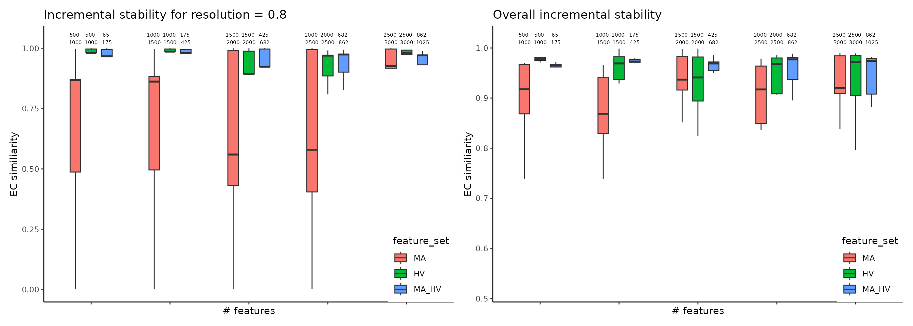
To enhance the summarized information presented as boxplots, we use plot_feature_stability_mb_facet to visualize the corresponding facet plot displaying the most frequent partitions for each feature set and step on an UMAP embedding. This plot can reveal additional insights i.e. the stability of a gene set might be explained in part by the scattered distribution of the cells across multiple islands. For the PBMC case study we notice a similar topology for all three feature sets.
plot_feature_stability_mb_facet(
feature_object_list = pca_feature_stability_object,
resolution = 0.8,
text_size = 3,
n_facet_cols = 6
)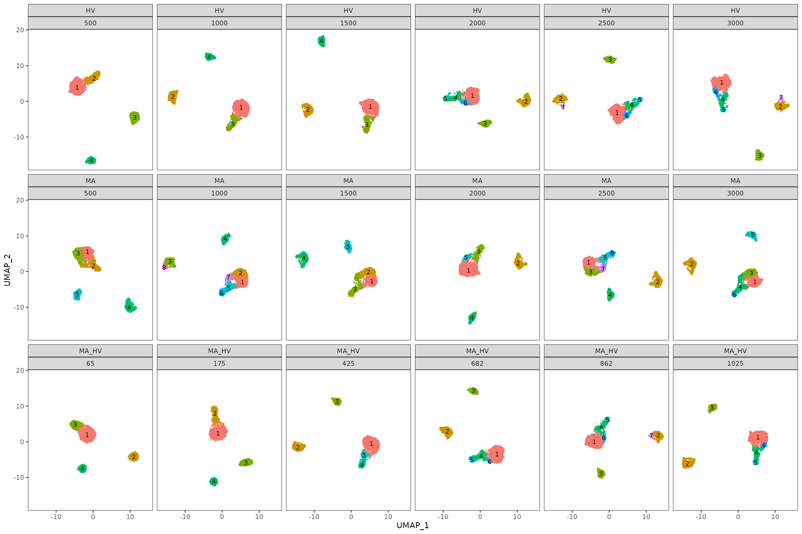
To further understand the areas of instability, we provide an additional plot where we display, on the same UMAPs as before, the Element-Centric Consistency score of the partitions obtained for each step and feature set. In our case, we notice that the source of instability is located in the main island of cells. These visualizations can help us understand the relationship between stability and the topology of the data.
plot_feature_stability_ecs_facet(pca_feature_stability_object, resolution = 0.8, n_facet_cols = 6)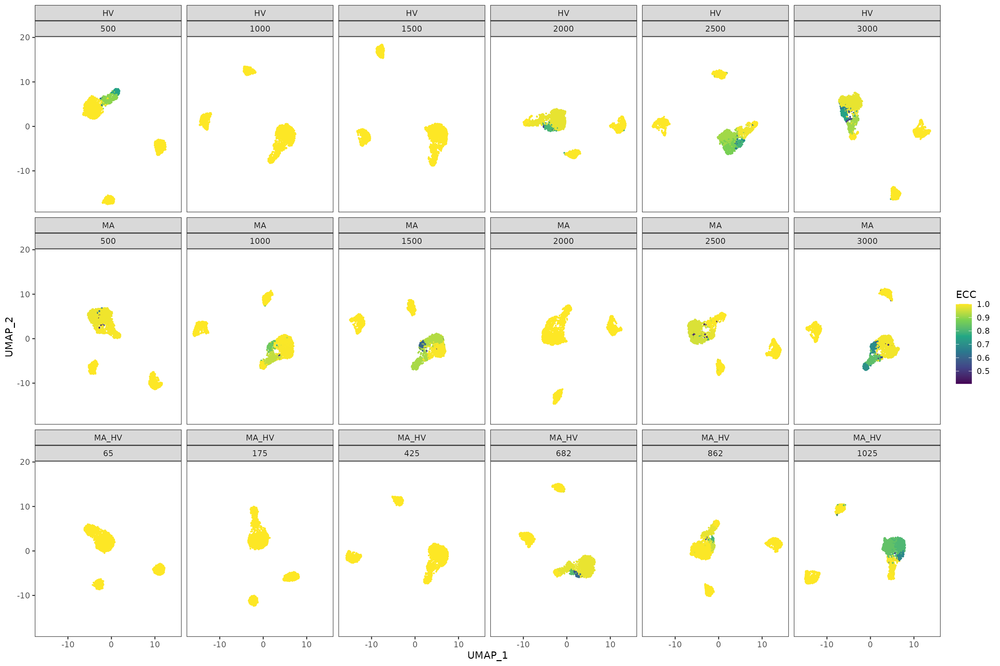
For the PBMC case study, based on the plots presented above, we conclude that the feature set does not highly impact the topology of the data. Judging by the consistency across multiple runs with different random seeds and the incremental stability, we have select the top 1000 Highly Variable genes.
Graph construction
The next step in a standard single-cell analysis pipeline is building the graph using the nearest neighbour algorithm. The following parameters influence the final partitioning:
- base embedding: the graph can be built on either the PCA or the UMAP embedding (using the expression matrix isn’t recommended, as the distances would be noisier and the runtime would increase)
- the number of neighbours
- the graph type: the graph can be either unweighted (NN case) or based on a weighted Shared-Nearest Neighbours (SNN) graph. For the latter, the weights are computed using the Jaccard Similarity Index (JSI) between the neighbourhoods of two cells.
get_nn_conn_comps is a method used to link the number of neighbours and the number of connected components (a connected component is a subgraph within which there exists a path between every pair of nodes). The method accepts as input both PCA and UMAP reductions; the distribution of the number of connected components obtainable for the given number of neighbours is calculated across random seeds. The output is a list containing, for each number of neighbours, an array with the number of connected components obtained on different seeds. As before, the objects can be concatenated to facilitate comparisons between different configurations and reductions.
nn_conn_comps_object <- get_nn_conn_comps(
embedding = pbmc3k@reductions$pca@cell.embeddings,
n_neigh_sequence = c(c(1, 2, 3, 4), seq(from = 5, to = 30, by = 5)),
n_repetitions = n_repetitions,
include_umap = TRUE,
umap_arguments = list(
min_dist = 0.3,
n_neighbors = 30,
metric = "cosine"
)
)The following plot describes the covariation between the number neighbours and the number of connected components obtained using both PCA and UMAP reductions as base for graph building. As the number of neighbours increases, the number of connected components decreases (this is an expected result, as increasing the number of neighbours result in a better connected graph). Please note that the number of connected components provides a lower bound on the number of clusters we can obtain by downstream community detection algorithms such as Louvain and Leiden.
Another comparison may be performed on the PCA and UMAP embeddings to assess graph connectivity. We note that, when using UMAPs, groups of cells are more separated compared to PCAs, for which a quick convergence to a connected graph (which is a graph where there exists a path between every two nodes) is obtained. The link between the number of connected components and the functional interpretation of the results is that the former could be interpreted as the minimum number of clusters that could be obtained with the given number of neighbours e.g. for the UMAP case, to obtain 5 communities from the clustering step, we would require at least 5 nearest neighbours.
plot_connected_comps_evolution(nn_conn_comps_object)
#> Warning in ggplot2::scale_y_continuous(breaks = chosen_breaks, trans =
#> "log10"): log-10 transformation introduced infinite values.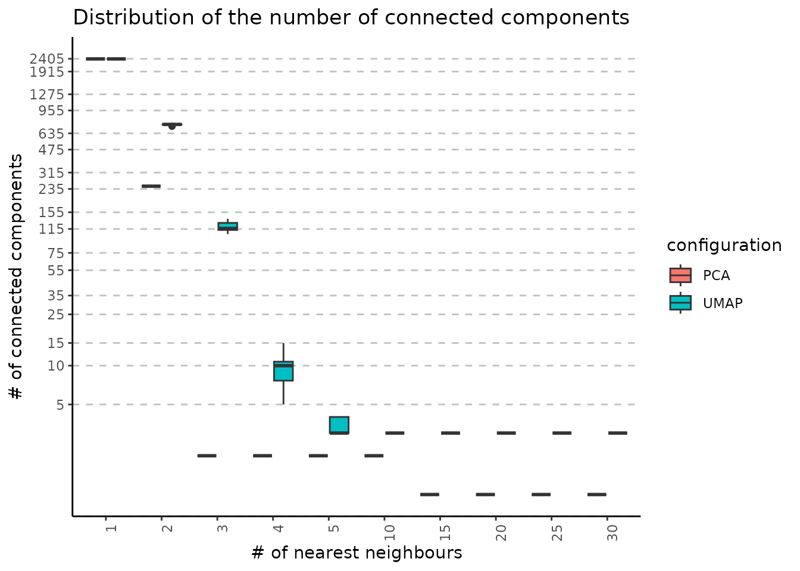
get_nn_importance is a method used for assessing the impact of number of nearest neighbours, of the graph type (NN or SNN) and of the base embedding (PCA or UMAP) in determining the final number of clusters. The input is either a normalized expression matrix or a PCA embedding, a range for the number of neighbours and the reduction type used for building the graph. The graph type is not provided, as the method will check both cases i.e. NN and SNN. The output comprises a list of configurations (reduction type, and the graph type). Each configuration will contain a list of unique partitions obtained from multiple runs (iterations) for each selected value of the nearest neighbours.
nn_importance_object <- mapply(c,
assess_nn_stability(
embedding = pbmc3k@reductions$pca@cell.embeddings,
n_neigh_sequence = seq(from = 5, to = 30, by = 5),
n_repetitions = n_repetitions,
graph_reduction_type = "PCA",
ecs_thresh = 1,
clustering_algorithm = 1
),
assess_nn_stability(
embedding = pbmc3k@reductions$pca@cell.embeddings,
n_neigh_sequence = seq(from = 5, to = 30, by = 5),
n_repetitions = n_repetitions,
graph_reduction_type = "UMAP",
ecs_thresh = 1,
umap_arguments = list(
min_dist = 0.3,
n_neighbors = 30,
metric = "cosine"
),
clustering_algorithm = 1
),
SIMPLIFY = FALSE
)We input the resulting object into plot_n_neigh_k_correspondence, to generate the following plot; it summarizes the relationship between the number of nearest neighbours and k, the number of clusters. As for the # neighbours vs # connected components correspondence plot, we note a similar descending trend of the number of clusters as the number of nearest neighbours increases. The plot also illustrates the difference between the two graph types: SNN has a tighter distribution of k (over multiple iterations) compared to NN. If the initial object contains graphs based on both UMAP and PCA embedding, this plot will showcase the impact of this choice, as well. For the PBMC dataset, we notice that the UMAP-based graph is partitioned into a greater number of clusters compared to the PCA case.
plot_n_neigh_k_correspondence(nn_importance_object)
#> Warning in ggplot2::scale_y_continuous(breaks = chosen_breaks, trans =
#> "log10"): log-10 transformation introduced infinite values.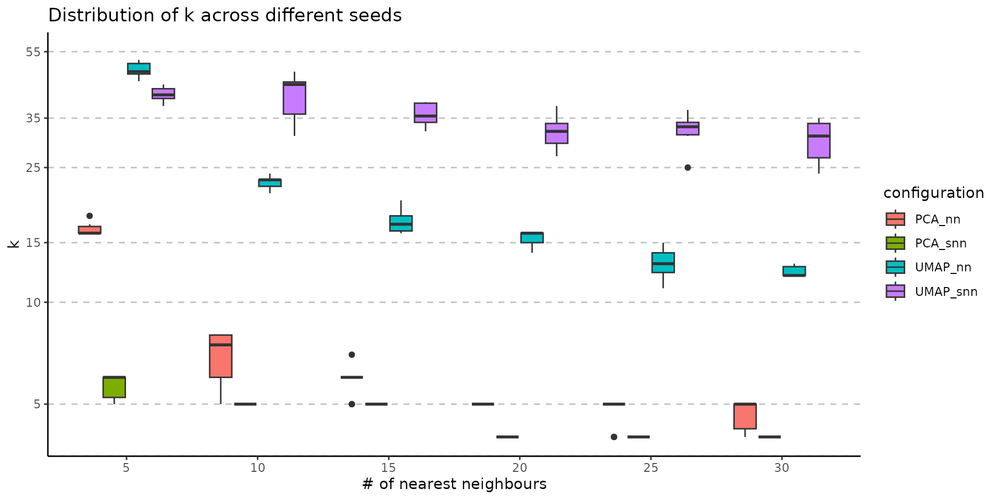
The stability of these parameters can be also evaluated using the Element-Centric Consistency applied on the partition list obtained over the multiple runs. The following summary plot underlines the evolution of the consistency as the number of neighbours increases; the PCA graphs yields stable results even for smaller number of nearest neighbours, whereas the UMAP exhibits a stability improvement as the number of neighbours increases. For the same number of nearest neighbors, SNN is more stable than NN.
plot_n_neigh_ecs(nn_importance_object)Graph clustering
The final step in a standard single-cell analysis pipeline is applying a graph-based clustering method. Choosing a community detection algorithm has a significant impact on the partitioning results. Using the get_clustering_difference we assess the stability and reproducibility of results obtained using various graph clustering methods available in the Seurat package: Louvain, Louvain refined, SLM and Leiden.
adj_matrix <- FindNeighbors(pbmc3k@reductions$pca@cell.embeddings, k.param = 15, nn.method = "rann", verbose = F)$snnAs previously suggested, the resolution parameter affects the number of clusters obtained. The get_resolution_importance evaluates the effect of a range of values for the resolution parameter on the stability of the output. Besides the resolution, the user can input multiple values of the following parameters: number of neighbours, the graph type and the clustering method. The function will return a list associated with each parameter value combination. For each resolution value, the list will contain multiple sublists of partitions corresponding to specific number of clusters.
clustering_stability <- assess_clustering_stability(
graph_adjacency_matrix = adj_matrix,
resolution = seq(from = 0.1, to = 2, by = 0.1),
n_repetitions = n_repetitions,
clustering_algorithm = 1:4,
ecs_thresh = 1
)
#> Unable to set up conda environment r-reticulate
#> run in terminal:
#> conda init
#> conda create -n r-reticulate
#> conda environment r-reticulate installed
#> Unable to install python modules igraph and leidenalg
#> run in terminal:
#> conda install -n r-reticulate -c conda-forge leidenalg python-igraph pandas umap-learn
#> python modules igraph and leidenalg installedThe stability of the methods is evaluated using the Element-Centric Consistency (ECC), which is applied on the partition list obtained over multiple runs. The following summary plot underlines the variation of the consistency as the resolution parameter increases. Above each boxplot, we display the number of clusters corresponding to the most frequent partition for the clustering method with the specific resolution parameter. Increasing the resolution leads to more clusters. We notice a high stability for all four methods for a low number of clusters. Starting with k = 8, Leiden and SLM perform better than Louvain and Louvain refined.
wrap_plots(
list(
plot_clustering_per_value_stability(clustering_stability, "k") +
theme(
legend.position = c(1, 0),
legend.justification = c(1, 0)
),
plot_clustering_per_value_stability(clustering_stability, "resolution") +
theme(
legend.position = c(1, 0),
legend.justification = c(1, 0)
)
), nrow = 1)The stats can be further summarised using functions such as the mean or the median and the overall displayed can be visualised in the following plot. This utility of this figure is proven on the task of choosing the clustering method that is overall the most stable. In our case, SLM is the most stable clustering method.
wrap_plots(list(
plot_clustering_overall_stability(clustering_stability, "k") +
theme(
legend.position = c(1, 0),
legend.justification = c(1, 0)
),
plot_clustering_overall_stability(clustering_stability, "resolution", mean) + # function(x) { quantile(x, probs = 0.25)[[1]]})
theme(
legend.position = c(1, 0),
legend.justification = c(1, 0)
)
), nrow = 1)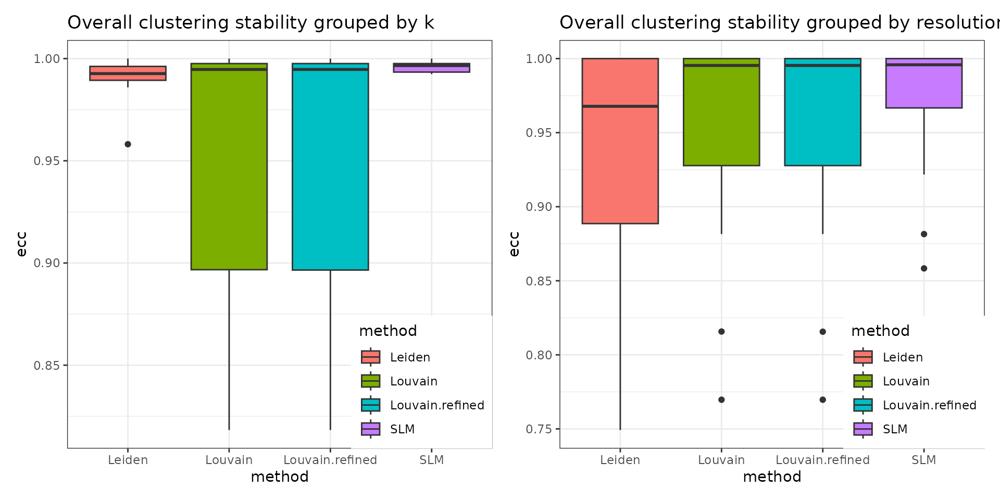
The resulting object can be visualized with plot_k_resolution_corresp as shown in the code below; we showcase the relationship between the number of clusters and the resolution value. This plot also provides information on suitable resolution values for predefined number of clusters. The colour gradient represents either the frequency of the partitions having k clusters or the ECC of them. It can also be used as proxy to describe the co-variation between (k, resolution). Lighter (higher) values indicate that little variation is observed, on changes of the random seed, between the number of clusters and the resolution value. The size illustrates the frequency of the most common partition when the resolution and the number of clusters values are fixed.
plot_k_resolution_corresp(clustering_stability, dodge_width = 0.7, summary_function = min) +
plot_annotation(title = "resolution - k correspondence with ecs threshold = 1")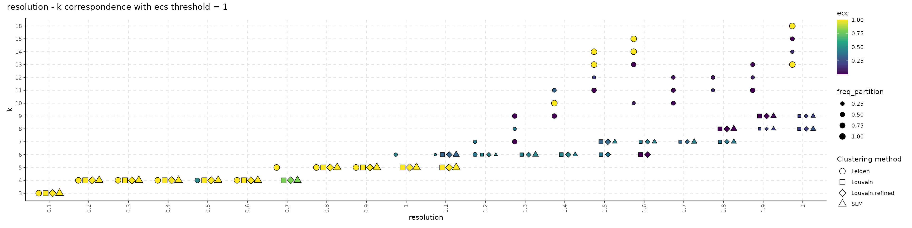
plot_k_resolution_corresp(clustering_stability, dodge_width = 0.7, colour_information = "freq_k") +
plot_annotation(title = "resolution - k correspondence with ecs threshold = 1")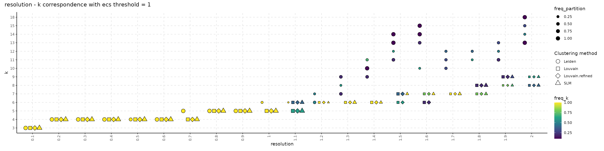
The following plot showcases the co-variation between the stability of the number of clusters and the number of different partitions resulting from changes on the seed or the resolution parameter. A high number of different partitions indicates a lower stability for a given number of clusters. The colour gradient is proportional to the frequency of most common partition having a fixed number of clusters or their ECC as an indicator of robustness. The size indicates the frequency of the partition having k clusters relative to the total number of runs and should provide additional information whether the behaviour described by the colour is replicated in multiple instances or not. We note that, even if we obtain a high number of different partitions, if the frequency of the most common one is close to 1, then the overall stability is high. Observing a high number of partitions, each with low frequency, indicates high instability. For the SLM clustering, k = 3, 4, 5, 6, 7, 8, 9 are stable choices for the number of clusters that should be used on the downstream analysis.
plot_k_n_partitions(clustering_stability, dodge_width = 0.5) + plot_annotation(title = "k - # partitions correspondence with ecs threshold = 1")
plot_k_n_partitions(clustering_stability, dodge_width = 0.5, colour_information = "freq_part") + plot_annotation(title = "k - # partitions correspondence with ecs threshold = 1")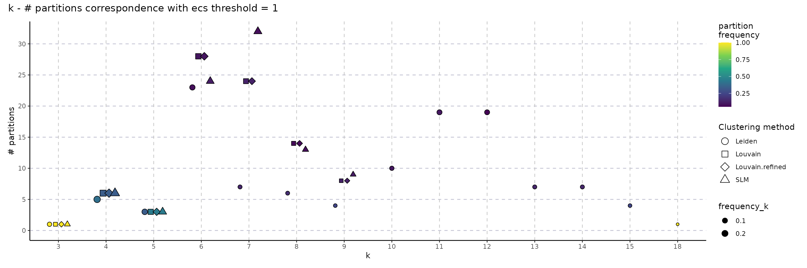
Close the connections opened when using multiple cores.
foreach::registerDoSEQ()We conclude by summarizing the runtime for executing each step of the assessment pipeline. The results observed on other systems may vary; the runtime is also affected by the size of the date (i.e number of cells and features), the data itself and by actual values for the various parameters.
paste(
"Feature stability methods runtime:",
format(as.numeric(stop_time_feature_stability - start_time_feature_stability,
units = "mins"
)), "minutes"
)
#> [1] "Feature stability methods runtime: 7.33879 minutes"
paste(
"NN - # connected components methods runtime:",
format(as.numeric(stop_time_nn_conn - start_time_nn_conn,
units = "mins"
)), "minutes"
)
#> [1] "NN - # connected components methods runtime: 0.5985121 minutes"
paste(
"NN stability methods runtime:",
format(as.numeric(stop_time_nn_importance - start_time_nn_importance,
units = "mins"
)), "minutes"
)
#> [1] "NN stability methods runtime: 2.524402 minutes"
paste(
"Clustering stability methods runtime:",
format(as.numeric(stop_time_clustering - start_time_clustering,
units = "mins"
)), "minutes"
)
#> [1] "Clustering stability methods runtime: 6.496472 minutes"Session info
sessionInfo()
#> R version 4.4.1 (2024-06-14)
#> Platform: x86_64-pc-linux-gnu
#> Running under: Ubuntu 22.04.4 LTS
#>
#> Matrix products: default
#> BLAS: /usr/lib/x86_64-linux-gnu/blas/libblas.so.3.10.0
#> LAPACK: /usr/lib/x86_64-linux-gnu/lapack/liblapack.so.3.10.0
#>
#> locale:
#> [1] LC_CTYPE=C.UTF-8 LC_NUMERIC=C LC_TIME=C.UTF-8
#> [4] LC_COLLATE=C.UTF-8 LC_MONETARY=C.UTF-8 LC_MESSAGES=C.UTF-8
#> [7] LC_PAPER=C.UTF-8 LC_NAME=C LC_ADDRESS=C
#> [10] LC_TELEPHONE=C LC_MEASUREMENT=C.UTF-8 LC_IDENTIFICATION=C
#>
#> time zone: Europe/Bucharest
#> tzcode source: system (glibc)
#>
#> attached base packages:
#> [1] stats graphics grDevices utils datasets methods base
#>
#> other attached packages:
#> [1] leiden_0.4.3.1 ClustAssess_1.1.0
#> [3] ggplot2_3.5.1 Seurat_5.1.0
#> [5] SeuratObject_5.0.2 sp_2.1-4
#> [7] Matrix_1.7-0 patchwork_1.2.0
#> [9] pbmcMultiome.SeuratData_0.1.4 pbmc3k.SeuratData_3.1.4
#> [11] SeuratData_0.2.2.9002 RhpcBLASctl_0.23-42
#> [13] devtools_2.4.5 usethis_2.2.3
#>
#> loaded via a namespace (and not attached):
#> [1] RColorBrewer_1.1-3 jsonlite_1.8.8 magrittr_2.0.3
#> [4] ggbeeswarm_0.7.2 spatstat.utils_3.0-5 farver_2.1.2
#> [7] rmarkdown_2.27 fs_1.6.4 ragg_1.4.0
#> [10] vctrs_0.6.5 ROCR_1.0-11 memoise_2.0.1
#> [13] spatstat.explore_3.3-1 progress_1.2.3 htmltools_0.5.8.1
#> [16] sass_0.4.9 sctransform_0.4.1 parallelly_1.37.1
#> [19] KernSmooth_2.23-20 bslib_0.7.0 htmlwidgets_1.6.4
#> [22] desc_1.4.3 ica_1.0-3 plyr_1.8.9
#> [25] plotly_4.10.4 zoo_1.8-12 cachem_1.1.0
#> [28] igraph_2.0.3 iterators_1.0.14 mime_0.12
#> [31] lifecycle_1.0.4 pkgconfig_2.0.3 R6_2.5.1
#> [34] fastmap_1.2.0 fitdistrplus_1.2-1 future_1.33.2
#> [37] shiny_1.8.1.1 digest_0.6.36 colorspace_2.1-0
#> [40] rprojroot_2.0.4 tensor_1.5 RSpectra_0.16-1
#> [43] irlba_2.3.5.1 pkgload_1.4.0 textshaping_0.4.0
#> [46] labeling_0.4.3 progressr_0.14.0 spatstat.sparse_3.1-0
#> [49] httr_1.4.7 polyclip_1.10-6 abind_1.4-5
#> [52] compiler_4.4.1 here_1.0.1 remotes_2.5.0
#> [55] withr_3.0.0 fastDummies_1.7.3 pkgbuild_1.4.4
#> [58] MASS_7.3-55 rappdirs_0.3.3 sessioninfo_1.2.2
#> [61] tools_4.4.1 vipor_0.4.7 lmtest_0.9-40
#> [64] beeswarm_0.4.0 httpuv_1.6.15 future.apply_1.11.2
#> [67] goftest_1.2-3 glue_1.7.0 nlme_3.1-155
#> [70] promises_1.3.0 grid_4.4.1 Rtsne_0.17
#> [73] cluster_2.1.2 reshape2_1.4.4 generics_0.1.3
#> [76] gtable_0.3.5 spatstat.data_3.1-2 tidyr_1.3.1
#> [79] hms_1.1.3 data.table_1.15.4 BiocGenerics_0.50.0
#> [82] spatstat.geom_3.3-2 RcppAnnoy_0.0.22 foreach_1.5.2
#> [85] ggrepel_0.9.5 RANN_2.6.1 pillar_1.10.1
#> [88] stringr_1.5.1 spam_2.10-0 RcppHNSW_0.6.0
#> [91] later_1.3.2 splines_4.4.1 dplyr_1.1.4
#> [94] lattice_0.22-6 survival_3.2-13 deldir_2.0-4
#> [97] tidyselect_1.2.1 miniUI_0.1.1.1 pbapply_1.7-2
#> [100] knitr_1.49 gridExtra_2.3 scattermore_1.2
#> [103] xfun_0.50 SharedObject_1.19.1 matrixStats_1.3.0
#> [106] stringi_1.8.4 lazyeval_0.2.2 yaml_2.3.9
#> [109] evaluate_0.24.0 codetools_0.2-18 tibble_3.2.1
#> [112] cli_3.6.3 uwot_0.2.2 xtable_1.8-4
#> [115] reticulate_1.38.0 systemfonts_1.1.0 munsell_0.5.1
#> [118] jquerylib_0.1.4 Rcpp_1.0.12 globals_0.16.3
#> [121] spatstat.random_3.3-1 png_0.1-8 ggrastr_1.0.2
#> [124] spatstat.univar_3.0-0 parallel_4.4.1 ellipsis_0.3.2
#> [127] pkgdown_2.1.3 prettyunits_1.2.0 dotCall64_1.1-1
#> [130] profvis_0.3.8 urlchecker_1.0.1 listenv_0.9.1
#> [133] viridisLite_0.4.2 scales_1.3.0 ggridges_0.5.6
#> [136] crayon_1.5.3 purrr_1.0.2 rlang_1.1.4
#> [139] cowplot_1.1.3